原创 九江万家幼儿园 成都市双流区九江万家幼儿园 2020-10-26 17:40 发表于四川
点击蓝字获取更多精彩信息
快乐早操
健康成长
早操活动不仅是孩子们进行身体锻炼的一项有益活动，也是调动幼儿一日生活良好情绪的开端，在增强幼儿体质，培养幼儿群体意识等方面有着重要的作用。为了促进幼儿身心健康发展，切实加强在早操活动规范管理，不断提高幼儿园早操质量，更好地达到孩子们强身健体的目的，万家幼儿园开展了“快乐早操，健康成长”幼儿早操比赛。
本次比赛要求师生共同展示，包括热身律动、徒手操、器械操、游戏活动、放松运动四个部分，各班在早操的编排上颇费心思，大胆创新。早操中将幼儿走、跑、跳基本动作、操节、舞蹈、律动、音乐游戏等融合在一起，使整个早操洋溢着童趣。
快乐早操
健康成长
首先是小班的萌宝宝们出场啦。记得小班的宝宝们刚入园时还是哭闹、不安的。到现在，己经能大方地投入到早操当中，他们活泼可爱，用稚嫩的小手、小脚，在快乐的音乐声中跟着老师认真地做动作，跳出了欢乐，跳出了可爱，跳出了童真与童趣！
精彩瞬间
当然，中班的孩子们也一样不甘示弱。接下来出场的队伍就是中班的小朋友们了！他们动作整齐、脸上充满阳光、自信，口令响亮，每一个动作都充满着稚气与活力，跳出了他们对运动的喜爱。
瞧，最后到来的是我们大班的孩子们，他们个个神气十足。他们每个动作都准确整齐有力、富有节奏呢！随着音乐节奏快乐的跳着，跳出了快乐，跳出了自信。跳出了他们对运动的喜爱，对健康的追求！
01
02
03
04
05
向右滑动<<
↓点它查看下一张图↓
各班的孩子和老师都用自己最饱满的精神状态迎接本次比赛，孩子们认真、专注的神情感染了在场的每一位前来观看的教师、家长。
本次活动的开展不仅锻炼了幼儿的体能，提高了幼儿动作的协调性、灵活性，更有效地培养孩子们的集体荣誉感及对早操活动的兴趣，从而喜欢参加体育活动，愉快的参与早操锻炼中来。
End
阅读 498
分享 收藏
27 14


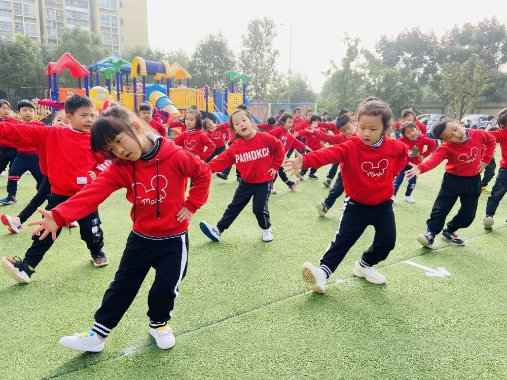


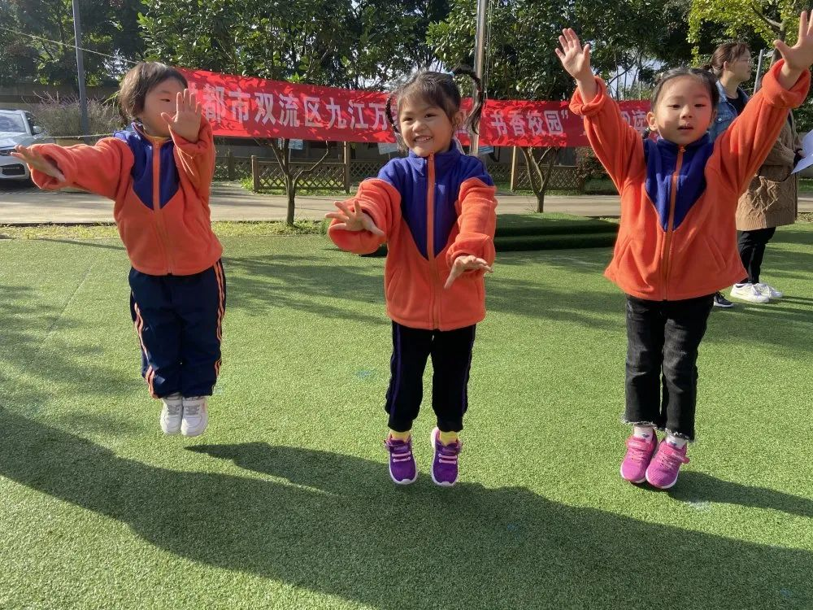
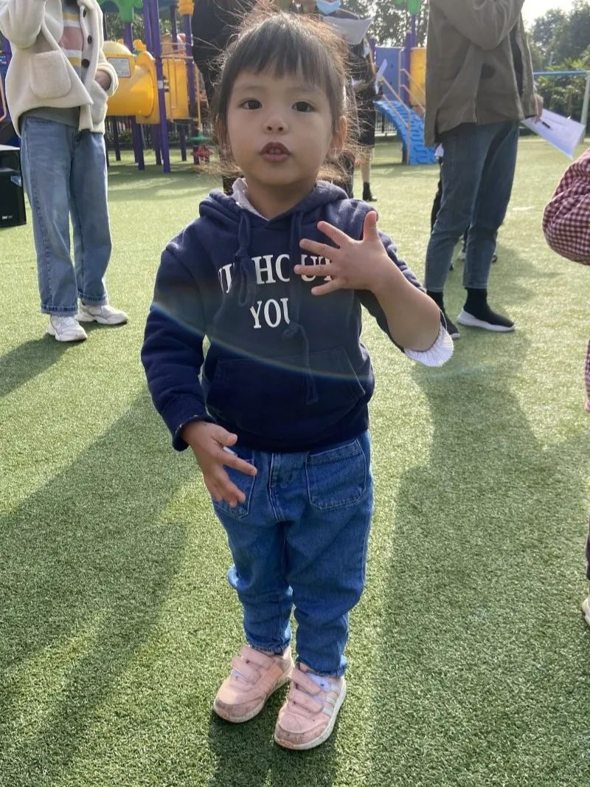
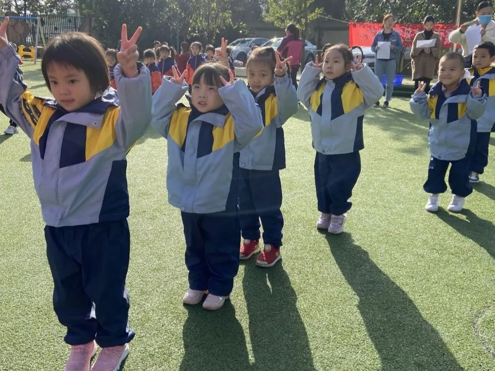
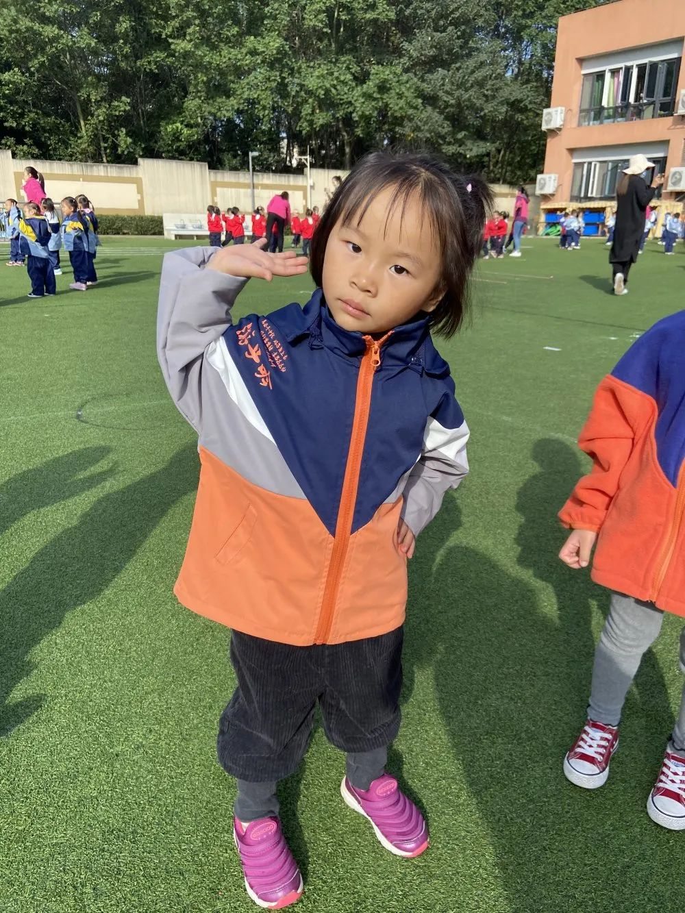

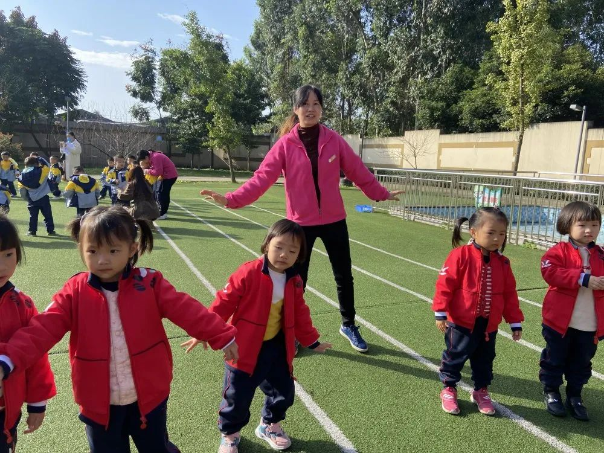

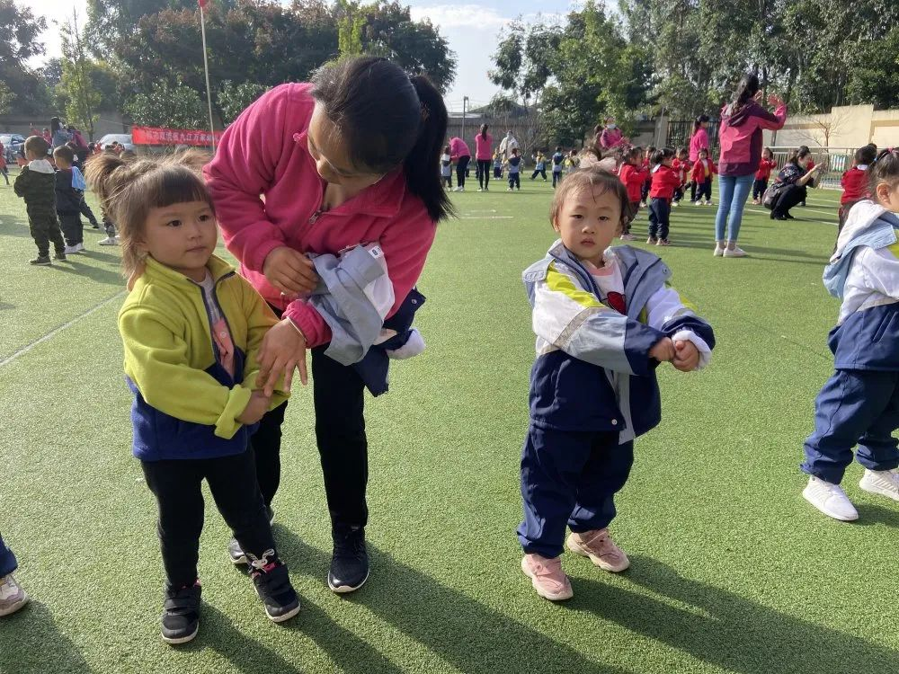
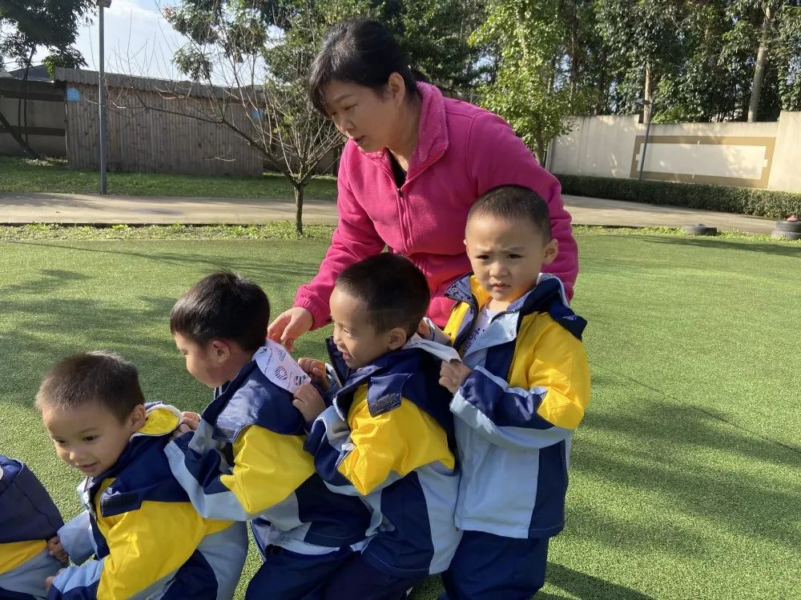

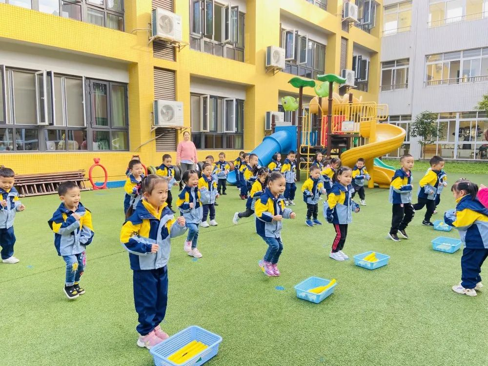

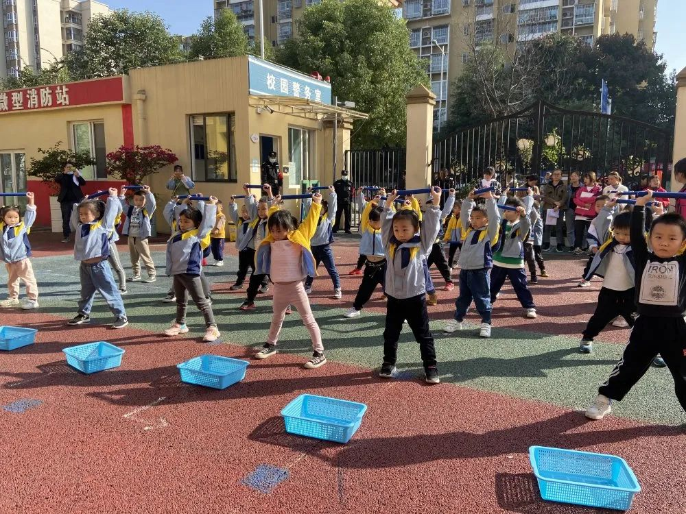
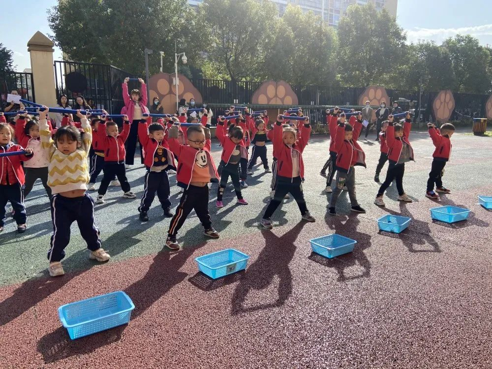
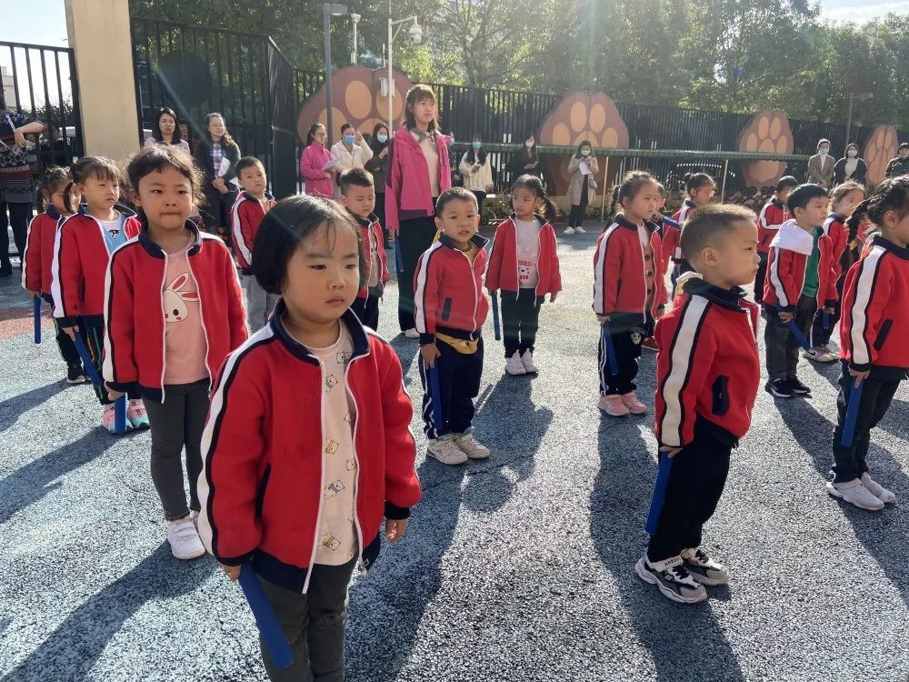


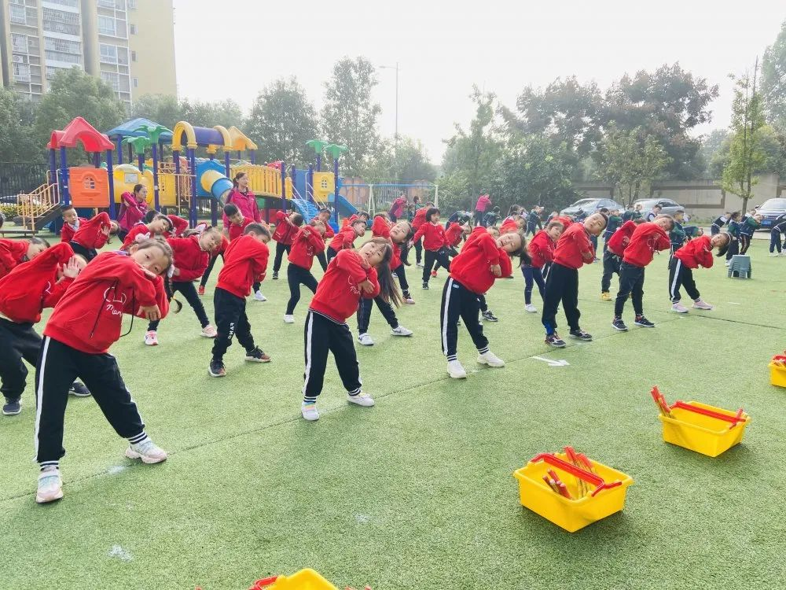